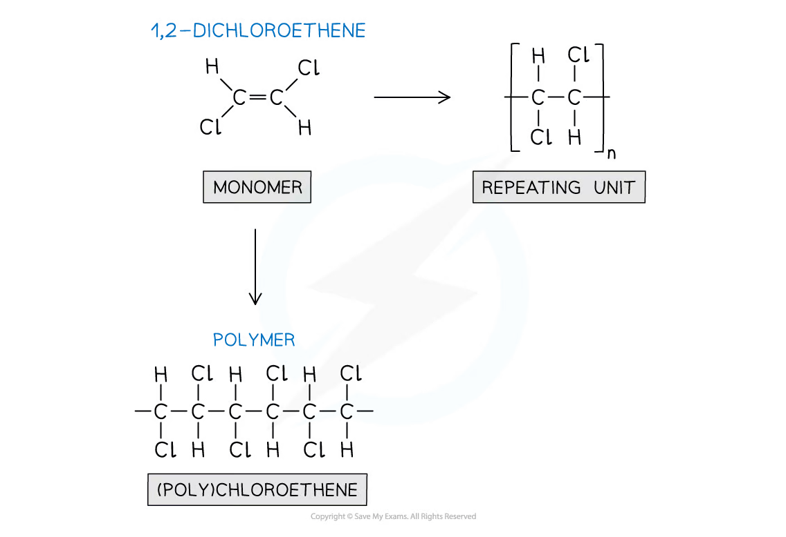
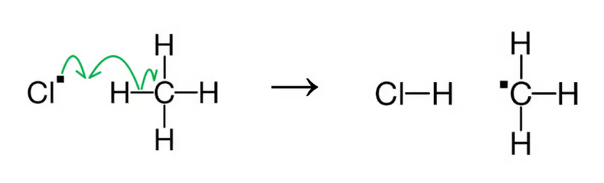
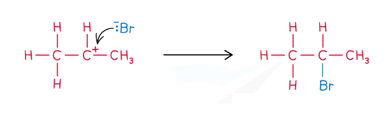

2.7 Organic Chemistry Introduction
Reaction types, curly arrows, bond fission and mechanism selection
2.7 Organic Chemistry Introduction
本页对应 2.7 Organic Chemistry Introduction.pdf.pdf。重点建立 organic reaction vocabulary：addition、elimination、substitution、oxidation、reduction、hydrolysis、polymerisation，以及 reaction mechanisms 中 curly arrows、homolytic / heterolytic fission、radicals、electrophiles 和 nucleophiles。专业词汇保留 English。
Learning objectives
- classify common organic reactions by the structural change；
- distinguish addition、elimination and substitution；
- identify oxidation、reduction、hydrolysis and addition polymerisation；
- use curly arrows to show movement of one electron or an electron pair；
- distinguish homolytic fission from heterolytic fission；
- use bond polarity to suggest whether a reaction is likely to involve radicals、electrophiles or nucleophiles。
2.7.1 Types of reaction
Addition
Two reactants combine to form one product。Addition reactions are especially common for alkenes because the C=C π bond can open and form two new sigma bonds。
Examples：
\[ \ce{C2H4 + H2 -> C2H6} \]
\[ \ce{C2H4 + Br2 -> C2H4Br2} \]
\[ \ce{C2H4 + H2O -> C2H5OH} \]
识别 clue：多个 reactants → one organic product，usually no small molecule eliminated。
Elimination
One reactant forms two or more products，often an alkene plus a small molecule such as H₂O or HBr。
Example：
\[ \ce{CH3CH2Br + OH- -> CH2=CH2 + H2O + Br-} \]
识别 clue：a small molecule is removed，and a new C=C bond may form。
Substitution
An atom or group of atoms in a compound is replaced by another atom or group。
Example：
\[ \ce{CH3CH2Br + OH- -> CH3CH2OH + Br-} \]
这里 OH⁻ replaces the bromine atom / bromo group。Substitution does not require a double bond to open。
Oxidation
Organic oxidation can involve：
- loss of hydrogen；
- gain of oxygen；
- increase in oxidation number。
Example：
\[ \ce{CH3CHO + [O] -> CH3COOH} \]
Possible oxidising reagents include acidified potassium dichromate(VI)、Fehling’s solution and Tollens’ reagent，depending on the reaction being studied。
Reduction
Organic reduction can involve：
- gain of hydrogen；
- loss of oxygen；
- decrease in oxidation number。
Example：
\[ \ce{CH3CHO + [H] -> CH3CH2OH} \]
Reduction may use hydrogen with a catalyst or a hydride reducing agent such as lithium aluminium hydride。
Hydrolysis
Hydrolysis is a reaction with water that breaks a compound into smaller products。The name means “lysis by water”，but hydrolysis often needs an acid / alkali catalyst or heating。
Example：
\[ \ce{CH3Cl + H2O -> CH3OH + HCl} \]
Hydrolysis of esters、acyl chlorides and haloalkanes will be developed in later organic chemistry chapters。
Addition polymerisation
In addition polymerisation，many alkene monomers join together。The C=C bond opens and becomes part of the polymer backbone；no small molecule is eliminated。
For 1,2-dichloroethene：
\[ \ce{nCHCl=CHCl -> [-CHCl-CHCl-]_{n}} \]
Key terms：
- monomer：small molecule used to build the polymer；
- repeating unit：smallest structural unit repeated in the chain；
- polymer：large molecule made from many monomers。

2.7.2 Reaction mechanisms - introduction
Equations versus mechanisms
A reaction equation tells you：
- which reactants and products are involved；
- stoichiometric amounts；
- overall reaction conditions where relevant。
A reaction mechanism explains how the reaction actually occurs，including the sequence of bond breaking and bond formation。Mechanisms use curly arrows to show electron movement。
Curly arrows
Single-headed curly arrow
A single-headed / fish-hook arrow shows movement of one electron。It is used for homolytic fission and radical reactions：
- a covalent bond splits equally；
- each atom receives one electron；
- two radicals are formed。
For example，a chlorine radical abstracts hydrogen from methane during free-radical substitution。

At International A Level，single-headed arrows are mainly associated with free-radical mechanisms and are less commonly required in detailed outlined mechanisms。
Double-headed curly arrow
A double-headed curly arrow shows movement of an electron pair。It is used when：
- a covalent bond undergoes heterolytic fission；
- a lone pair attacks an electron-deficient centre；
- a new covalent bond forms from an electron pair。
The arrow starts at the electron source：a lone pair or a covalent bond。It points to the electron-poor atom or the position where the new bond forms。
Homolytic and heterolytic fission
Homolytic fission：bond breaks evenly，one electron goes to each atom，forming two radicals。
\[ \ce{A-B -> A. + B.} \]
Heterolytic fission：both bonding electrons go to one atom，forming a positive ion and a negative ion。
\[ \ce{A-B -> A+ + B-} \]
A polar bond is more likely to undergo heterolytic fission because the bonding pair is already pulled toward the more electronegative atom。
Electrophiles and nucleophiles
An electrophile is electron deficient and accepts an electron pair。It may be a positive ion or a partially positive centre, δ+。
A nucleophile is electron rich and donates an electron pair。It may be a negative ion or a neutral species with a lone pair。
Examples：
- electrophiles：
H⁺、Brδ+in polarisedBr₂、carbocations； - nucleophiles：
OH⁻、Br⁻、NH₃、lone pairs on oxygen / nitrogen。
在 mechanism 中，nucleophile 的 lone pair attacks an electrophilic centre，形成 a new covalent bond。

2.7.3 Bond polarity and mechanism selection
Bond polarity 可帮助判断 reaction mechanism：
Non-polar or weakly polar bonds
Example：
\[ \ce{C2H6 + Cl2 -> C2H5Cl + HCl} \]
Most bonds are non-polar or only weakly polar。Under suitable conditions，homolytic fission produces radicals，so the reaction proceeds by free-radical substitution。
Polar bonds and electron-rich π bonds
Example：
\[ \ce{C2H4 + HBr -> C2H5Br} \]
H-Br is polar，and the electron-rich C=C π bond attracts an electrophile。This suggests heterolytic electron-pair movement and electrophilic addition。
Practical decision sequence
- identify the functional group and the most electron-rich / electron-poor site；
- assess bond polarity and possible partial charges；
- decide whether the key step uses one electron or an electron pair；
- choose radical substitution、electrophilic addition、nucleophilic substitution or another mechanism；
- draw arrows from electron-rich source to electron-deficient centre。
Exam checklist
Source note
本页内容来自项目内的 Note per Chapter/Note per Chapter/2.7 Organic Chemistry Introduction.pdf.pdf。PDF 中的 polymerisation diagram 和 mechanism curly-arrow diagrams 已独立提取并统一处理为 white-background PNG，存放在 assets/notes/2-7-organic-introduction/。